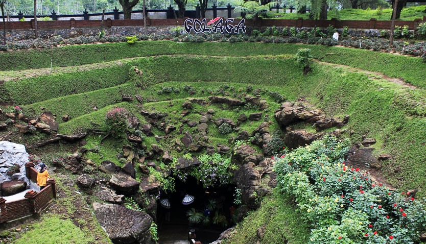
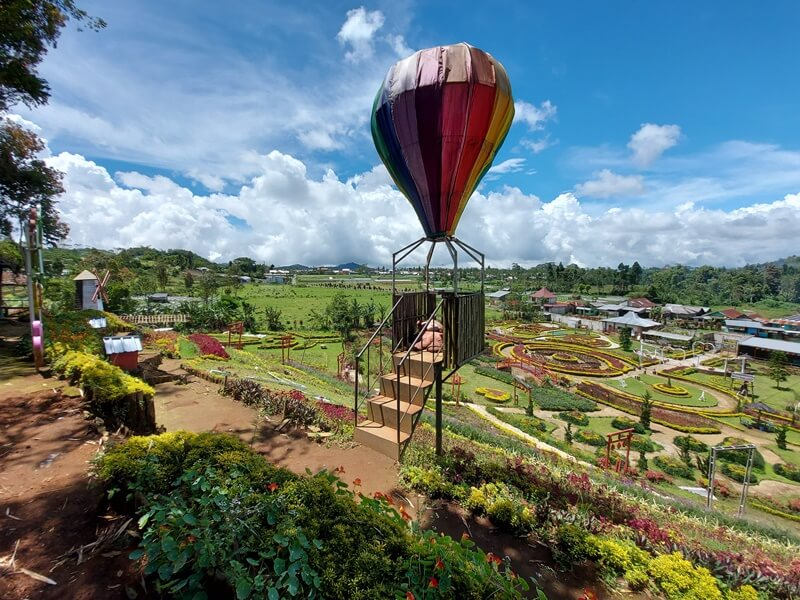

Kecamatan Purbalingga terdiri dari beberapa kelurahan dan desa, di antaranya: Kelurahan Bojong, Kelurahan Kedungmenjangan, Kelurahan Bancar, Kelurahan Purbalingga Wetan, Kelurahan Penambongan, Kelurahan Purbalingga Kidul, Kelurahan Kandanggampang, Kelurahan Purbalingga Kulon, Kelurahan Purbalingga Lor, Kelurahan Kembaran Kulon, Kelurahan Wirasana, Desa Toyareja, Desa Jatisaba
Website ini bertujuan untuk menampilkan sebuah informasi Peta Kecamatan Purbalingga, beserta desa yang ada di Kecamatan Purbalingga. Ditampilkan pada sebuah maps yang sudah dipetakan berdasarkan fasilitas yang ada pada daerah tersebut.
Peta Desa
Desa Jatisaba, Kecamatan Purbalingga
Peta Kecamatan
Kecamatan Purbalingga, Kabupaten Purbalingga, Jawa Tengah
Informasi Wisata

Sekilas Info
Goa Lawa
Sekilas Info
Curug Nagasari
Sekilas Info
D'las Lembah Asri Serang

Sekilas Info
Kutabawa Flower
Sekilas Info
Sanggaluri Park
Sekilas Info
Telaga Situirta
Sekilas Info
Goa Lawa
GOA LAWA PURBALINGGA atau GOLAGA merupakan keajaiban alam di Indonesia, terbentuk dari lava pegunungan aktif yang meleleh selama ribuan tahun. Proses pendinginan lava inilah yang mengakibatkan batuannya keras dan kuat dengan warna hitam tanpa menimbulkan stalagnit dan stalagmit, merupakan daya tarik wisata alam dengan nuansa pegunungan yang sejuk, berlokasi di lereng Gunung Slamet dan memiliki luas 11,5 Ha. Suasana yang asri dan alami dengan hamparan rumput yang hijau di bawah rindangnya pohon pinus.
Sekilas Info
Curug Nagasari
Curug Nagasari merupakan salah satu destinasi wisata alam yang wajib dikunjungi saat berada di Purbalingga. Air terjun yang menjulang tinggi dengan keindahan alam yang masih asri menjadi daya tarik utama tempat ini. Air terjun dengan ketinggian sekitar 72 meter ini menawarkan pemandangan alam yang asri dengan tebing batu hitam dan suasana hutan yang sejuk, menjadikannya destinasi ideal bagi pencinta alam dan petualangan.
Sekilas Info
Kutabawa Flower
Kutabawa Flower Garden atau yang lebih dikenal dengan Kutabawa Rainbow Garden adalah destinasi wisata yang menawarkan keindahan hamparan bunga-bunga warna-warni di kaki Gunung Slamet, Purbalingga. Keindahan alamnya yang memukau, udara sejuk, dan beragam spot foto menarik menjadikan tempat ini sebagai salah satu tujuan wisata favorit di Jawa Tengah.
Sekilas Info
Desa Wisata Lembah Asri Serang
Desa Wisata Lembah Asri Serang (D'las), Kecamatan Karangreja menjadi salah satu destinasi favorit Purbalingga, Jawa Tengah. Harga tiket masuk murah meriah cuma Rp 10.000. Terletak di lereng Gunung Slamet, D'las memiliki suasana di desa yang masih sangat asri. Wisatawan dapat menikmati udara sejuk pegunungan dan beristirahat sejenak dari ramainya perkotaan.
Sekilas Info
Sanggaluri Park
Sanggaluri Park Purbalingga merupakan tempat wisata dengan sejumlah wahana edukasi flora dan fauna yang di area seluas 3,5 hektar. Sebelumnya, Sanggaluri Park Purbalingga disebut Taman Reptil Purbalingga. Taman wisata ini memiliki berbagai aktivitas menarik.
Sekilas Info
Telaga Situtirta
Telaga Situ Tirta Marta merupakan tempat wisata air di Purbalingga, Jawa Tengah (Jateng). Airnya berasal dari mata air Gunung Slamet. Tempat ini biasanya juga dijadikan lokasi berenang. Pengunjung yang datang ke tempat ini pasti akan takjub karena air di Telaga Situ Tirta Marta sangatlah jetnih. Bahkan karena jernihnya air di telaga ini, pengunjung dapat melihat sampai dasar kolam. Apalagi tempat ini sering juga dijadikan tempat bagi pengunjung yang ingin merasakan spot berfoto underwater.